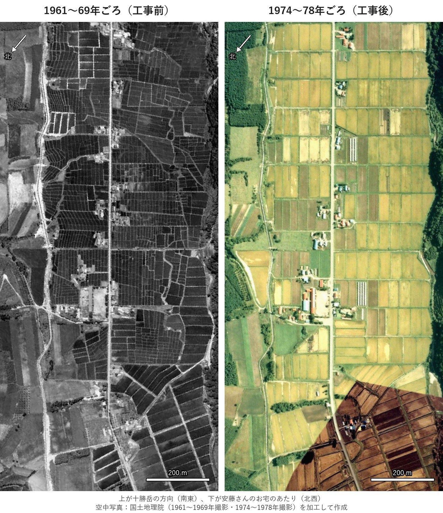

置杵牛 開拓120周年 記念誌
水田の大型化の工事（1966〜1974年）の前と後を、十勝岳が上の向きで、安藤さんのお宅から中央会館のあたりまで並べた見本と、地理院にある写真の一覧です。使う年を選んでいただければ、その写真で作ります。
このページは公開していません。どこからもリンクしておらず、検索にも出ません。記念誌ができましたら削除します。

左は1960年代の写真で、小さく不ぞろいな田んぼです。右は1970年代の写真で、大きな四角い田んぼに変わっています。
この見本は地理院の地図用の写真から作ったので、右の下の方に撮影日の違う写真の継ぎ目（茶色の部分）があります。本番は1枚の写真から作るので、継ぎ目はなくなります。
安藤さんのお宅から会館のあたりが写っている写真です（国土地理院「地図・空中写真閲覧サービス」）。リンクを押すと、地理院のサイトでその年の写真を探した画面が開きます（最初に注意事項への同意を求められます）。
| 撮影 | 種類 | ようす |
|---|---|---|
| 1960年6月 1963年6月 | 白黒 | 工事の前。小さな田んぼ。地理院で見る |
| 1967年7月 1972年 | 白黒 | 工事のとちゅう。地理院で見る |
| 1977年9月25日おすすめ | カラー | 工事の直後。黄色く実った稲の大きな田んぼ。1枚で安藤さんのお宅から会館まで入ります（昭和52年）。地理院で見る |
| 1999年9月 2001年8月 | 白黒 | 平成。2001年は縮尺が小さく、やや粗め。地理院で見る |
| 2009年10月25日 | カラー | 平成。稲刈りのあとで、田んぼは茶色。地理院で見る |
2003年ごろの写真と、平成以降で稲が緑や黄色に写ったカラー写真は、地理院にはありませんでした。
決めていただきたいこと
出典：国土地理院の空中写真（1961〜1969年撮影・1974〜1978年撮影）を加工して作成。写真の一覧は国土地理院「地図・空中写真閲覧サービス」による。